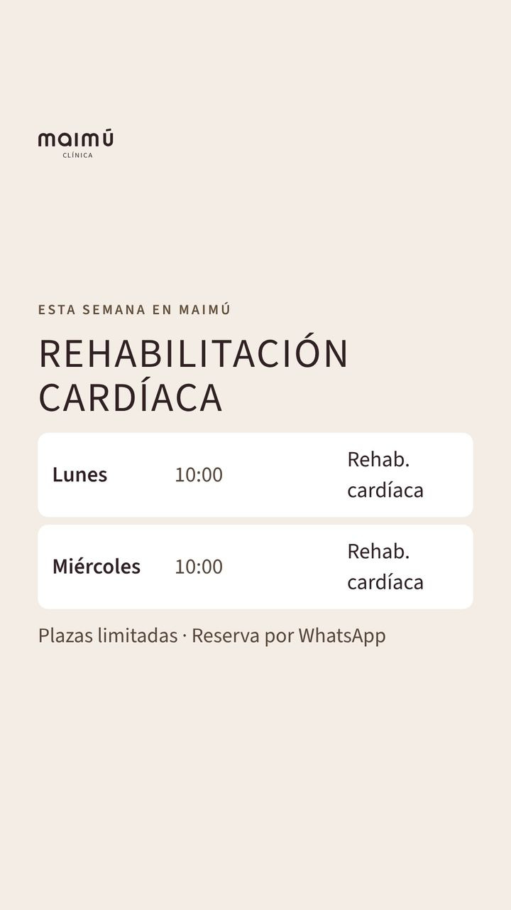
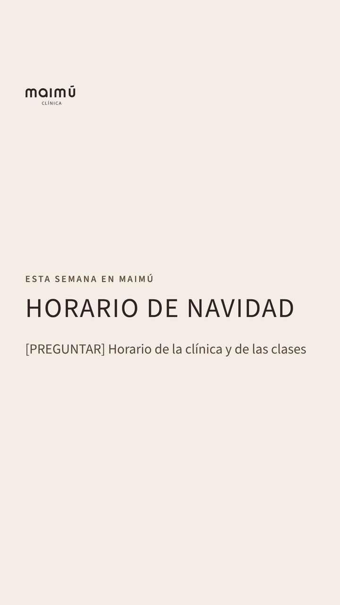

Publicaciones
P01 · Carrusel · 6 imágenes, desliza →
Martes 1 de diciembre · 19:00
Que nos conozcan por lo que nos hace distintos: el trato con mimo.
¿Sabes qué significa Maimú? 🌿
Viene del japonés マイム y significa «mimo».
En el teatro, el mimo se expresa con el movimiento, y nuestra misión es mantener el tuyo. Y «mimar» es tratar a alguien con cariño y delicadeza: así queremos que te sientas desde el primer día.
Cada paciente es único, pero todos tienen algo en común: quieren un trato con mimo, quieren Maimú. 💛
📍 P.º de Estrasburgo 15, Salburua (Vitoria-Gasteiz)
💬 Pide tu cita por WhatsApp: enlace en el perfil
#clinicamaimu #fisioterapiavitoria #vitoriagasteiz #salburua
P02 · Carrusel · 5 imágenes, desliza →
Jueves 3 de diciembre · 19:00
Explicar lo que nos diferencia en tecnología (la ecografía) y generar confianza.
🩺 Que lo revise Amagoia
Fisioterapia ecoguiada: vemos lo que tratamos 🔍
Con la ecografía en tiempo real vemos músculos, tendones y ligamentos. Así localizamos el origen del dolor, planificamos el tratamiento, aplicamos cada técnica con más precisión y seguimos tu evolución con más rigor.
👉 Desliza para ver algunas de las técnicas ecoguiadas que usamos en Maimú.
💬 ¿Tienes dudas? Escríbenos por WhatsApp: enlace en el perfil.
#fisioterapiaecoguiada #fisioterapiavitoria #vitoriagasteiz #salburua #clinicamaimu
P03 · Carrusel · 7 imágenes, desliza →
Jueves 10 de diciembre · 19:00
Llenar plazas de las clases dirigidas.
🩺 Que lo revise Amagoia
¿Pilates, fuerza o rehabilitación cardíaca? 🤔
En Maimú creemos en la prevención, y por eso tenemos clases dirigidas por profesionales de la clínica:
· Pilates (por niveles)
· Pilates para embarazadas
· Entrenamiento de fuerza
· Rehabilitación cardíaca (fase III)
🗓️ En el carrusel tienes el horario de todas.
Las plazas son limitadas: reserva la tuya por WhatsApp (enlace en el perfil) o en el 662 603 624.
#pilatesvitoria #vitoriagasteiz #salburua #clinicamaimu
P04 · Carrusel · 5 imágenes, desliza →
Martes 15 de diciembre · 19:00
Dar a conocer un tratamiento concreto para problemas de tendones.
🩺 Que lo revise Amagoia
Ondas de choque focales ⚡
Son ondas acústicas de alta energía que aplicamos sobre la zona con dolor o lesión, sobre todo en problemas de tendones.
Las usamos, por ejemplo, en fascitis plantar, tendinitis de hombro con calcificaciones, epicondilitis («codo de tenista») y tendinitis aquílea. Pueden ayudar a reducir el dolor, estimular la reparación del tejido y mejorar la circulación de la zona.
Cada caso es distinto: primero te valoramos y vemos si es el tratamiento indicado para ti.
💬 Pide tu cita por WhatsApp (enlace en el perfil).
#ondasdechoque #fisioterapiavitoria #vitoriagasteiz #clinicamaimu
P05 · Carrusel · 4 imágenes, desliza →
Jueves 17 de diciembre · 19:00
Poner cara y confianza al equipo.
¿Quién te cuida en Maimú? 💛
Un equipo de especialistas en fisioterapia, osteopatía, ejercicio terapéutico y nutrición, liderado por Amagoia, fisioterapeuta, osteópata y directora de la clínica. Varios llevan más de diez años con nosotros.
Todos nuestros fisioterapeutas y osteópatas están colegiados y tienen estudios universitarios, posgrados y formación continua.
Muy pronto te los presentamos uno a uno 😊
💬 Pide tu cita por WhatsApp (enlace en el perfil).
#fisioterapiavitoria #vitoriagasteiz #salburua #clinicamaimu
P06 · Carrusel · 5 imágenes, desliza →
Martes 22 de diciembre · 19:00
Captar a personas que han terminado la rehabilitación cardíaca en el hospital.
🩺 Que lo revise Amagoia
La rehabilitación cardíaca no termina con el alta ❤️
La fase III, o de mantenimiento, es una etapa fundamental que muchos pacientes abandonan tras un evento cardíaco. El primer año es clave para mejorar la capacidad cardiovascular y la calidad de vida.
En Maimú te preparamos un programa personalizado y supervisado según tu última prueba de esfuerzo, y en cada sesión controlamos la tensión arterial, la frecuencia cardíaca, los vatios y el esfuerzo. Los datos se pueden compartir con tu cardiólogo.
💬 Pregúntanos por WhatsApp (enlace en el perfil).
#rehabilitacioncardiaca #vitoriagasteiz #salburua #clinicamaimu
P07 · Foto
Jueves 24 de diciembre · 19:00
Felicitar las fiestas y avisar del horario de Navidad.
⛔ Necesitamos: Horario de Navidad de la clínica
Felices fiestas de parte de todo el equipo de Maimú 🎄💛
Gracias por confiar en nosotros. Te deseamos unos días de descanso, de familia y de mucho mimo.
🗓️ Horario de Navidad: [PREGUNTAR]
#felicesfiestas #vitoriagasteiz #salburua #clinicamaimu
P08 · Carrusel · 5 imágenes, desliza →
Martes 29 de diciembre · 19:00
Dar a conocer la unidad de dolor orofacial y ATM (bruxismo).
🩺 Que lo revise Amagoia
¿Aprietas los dientes o te duele la mandíbula? 😬
En Maimú tenemos una unidad especializada en dolor orofacial y en los problemas de la articulación temporomandibular (ATM).
Empezamos con una valoración completa y trabajamos con terapia manual y ejercicios específicos para aliviar el dolor, mejorar la función de la mandíbula, tratar disfunciones como el bruxismo y reducir la tensión muscular.
💬 Escríbenos por WhatsApp (enlace en el perfil) y te damos cita.
#bruxismo #atm #fisioterapiavitoria #vitoriagasteiz #clinicamaimu
Historias
Las encuestas y los enlaces se añaden en la app al publicarlas.

Miércoles 2Nuestro ecógrafo
🩺 Que lo revise Amagoia

Viernes 4¿Qué te molesta más?
En la app: Encuesta: Espalda · Cuello

Miércoles 9Nuestra sala de clases

Viernes 11¿Has probado el pilates?
En la app: Encuesta: Sí · Todavía no

Lunes 14Entrenamiento de fuerza

Miércoles 16Rehabilitación cardíaca

Viernes 18¿Aprietas los dientes por la noche?
En la app: Encuesta: Sí · No · No lo sé🩺 Que lo revise Amagoia

Lunes 21Rehabilitación cardíaca
⛔ Necesitamos: ¿Hay clases la semana de Navidad? (el viernes 25 es festivo)

Miércoles 23¿Te duele algo?
En la app: Enlace: WhatsApp de la clínica

Lunes 28Horario de Navidad
⛔ Necesitamos: Horario de Navidad de la clínica y de las clases
¿Todo bien?
Si os parece bien todo el mes (salvo lo que ya me hayáis comentado), pulsad aquí.
✅ Aprobar todo el mes